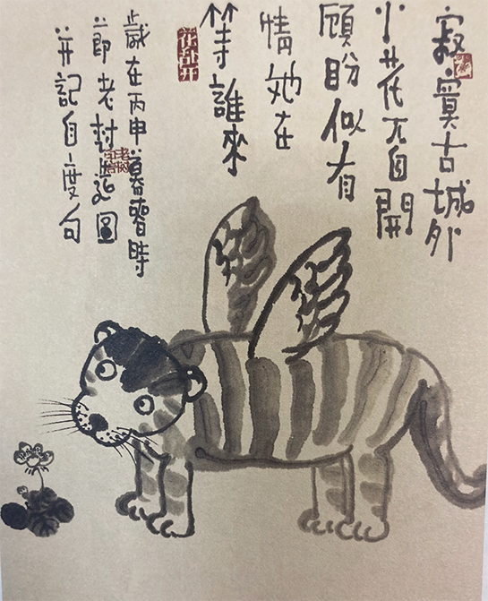

关于当代年轻人婚姻的看法
关于当代年青人婚姻的一些看法
当代年轻人为什么都不愿意结婚了呢？这是一个社会热议问题。结合现在的社会现象表达一下个人的一些肤浅之见。

一、 当代年表人为什么不结婚了呢？
结婚经济过高
经济基础决定上层建筑，结婚的成本主要有房子、车子、票子。在国内传统概念里这些是必不可少的，第一关丈母娘就会做一个初筛选。 房子：以成都为例需要 150w ~ 200w 居多，首付在 60w ~ 100w 左右。
车子：这个几乎是标配了，有的地方有爱攀比的心理，一般再差也给上个 15～30w 的车显的有面子。票子：大部分地区都会有彩礼：以四川综合来看10～20W 彩礼。 办婚宴：富有富的办法，婚宴开销大概在：10 ~ 15w 左右。综合来看房子首付的情况下结婚的成本大约在 120w 左右。缺乏社交
很多年轻人都忙于工作或学习，没有时间和机会去认识新的异性朋友，或者参与一些社交活动。
他们的生活圈子比较小，性格也比较内向，不容易找到合适的对象。少部分玩的花的年轻人除外，上班 966 的福报还没有受够。价值观差异化
有一些年轻人认为婚礼制度是一个过时的制度，在没有遇到真爱前他们更看重自己的幸福和自由。
在道德约束下你想得到稳定的性关系那你就要结婚。另一方面由于网络短视频影响，有部分女生的价值观被灌输人男生必须年薪百万，人均法拉利，长的又帅霸道总裁。
这就很难了，能达到这些条件的男生在社会上凤毛麟角。男生也由于多次感情上当后选择不当备胎，没有女朋友外还有其它的精神娱乐，如游戏、运动。
- 养育子女压力
许多父母都希望给孩子最好的教育和机会，因此需要投入多金钱和时间。父母也需要平衡工作和家庭的责任。经济社会下行的不稳定导致担心未来有许多的不确定性，导致收入无法支撑一个家庭。就像动物世界里面的，在遇到极端的恶劣的环境动物会选择不生育。另一方面在经济好的环境下，精益求精人类也一样会选择 “K” 策略。
二、 你是如何看待婚姻的？
- 婚姻应该是相互尊重的
我认为婚姻是彼此尊重的，像小时候学过的一篇课文《致橡树》
“我必须作为树的形象和你站在一起”(Be the image of a tree standing together with you)。我相信只有坚贞的爱情才能一起同甘共苦。
- 如果未来结不了婚怎么办？
婚姻我认为是人生很重要的一个体验。顺其自然，看缘份如果在条件成熟也相信未来有一段美妙的婚姻生活。 当然如果条件不成熟，内在或外在的不必强求。想想现在能结婚的人多么幸福多，还有那么多人结得了婚。被时代淘汰了也正常， 我不认为我们每一个人都有优秀的基因需要遗传。张爱玲说：*“如果孩子的出生，是为了继承自己的劳碌，恐慌、贫困，那么不生也是一种善良”*。 当然我会努力的去创造条件。
- 如何看待社会压力？
首先价值观一定要匹配，婚姻是一种责任，也是人个幸福的来源。 感情矛盾、家庭暴力都会对社会不稳定造成压力，破碎的家庭对小孩童年心理造成极大的伤害。 所以每个人都有权利选择自己的生活方式和幸福，但一定要勇敢担起共同的责任。
本博客所有文章除特别声明外，均采用 CC BY-SA 4.0 协议 ，转载请注明出处！